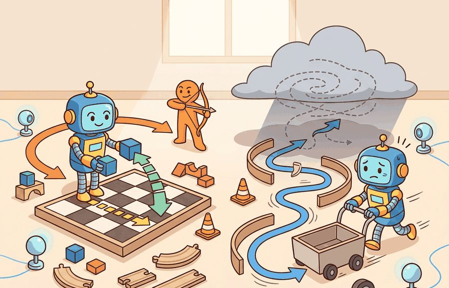
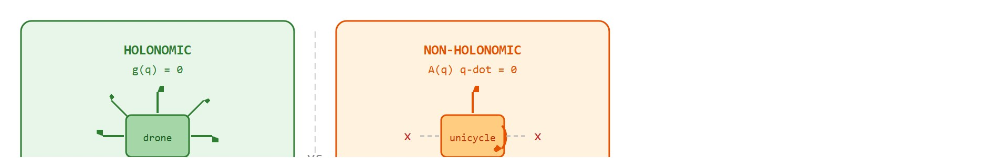

"A holonomic robot forgets its history; it can always step sideways. A non-holonomic robot is a prisoner of its own path."
A Differential Geometer on Wheels

Figure 5.2A: Holonomic vs. non-holonomic motion: a car-like robot cannot slide sideways, so its reachable set from one pose differs sharply from a drone that can translate in any direction.
This section assumes familiarity with velocity representations and twists from section 5.1. The non-holonomic constraint introduced here is applied concretely to differential-drive and car-like robots in section 5.3. Its planning consequences, specifically why velocity-level constraints require kinodynamic planners rather than geometric ones, are developed in section 30.3.
Big Picture
A warehouse robot spots an open slot one meter to its right. A drone gets there in a single sideways glide. A differential-drive robot must arc forward, pivot, and arc again, even though the destination is centimeters away laterally. That gap is not a software bug; it is a fundamental physical constraint on which velocities the robot can instantaneously produce. As embodied AI moves from controlled labs into hospitals, factories, and city streets, planners that ignore this distinction generate trajectories the hardware simply cannot follow. The remainder of this section develops the tools to classify any robot's constraints, derive the Pfaffian form that planners must enforce, and verify correct behavior on a simulated unicycle.
Ask a parallel-parking driver to slide their car straight sideways into the curb, and they will laugh: the tires forbid it, yet the same driver routinely ends up parked there anyway, by chaining forward and reverse arcs. That single gap, between what a robot can do in the next instant and where it can eventually arrive, is the entire subject of this section, and getting it wrong is the difference between a planner that works on paper and one that works on pavement.
The holonomic-versus-non-holonomic distinction is a practical question, not a taxonomy exercise: what must the agent know, what can it observe, what action is available, and what evidence shows that the action worked under the stated conditions?
Action Is The Test
A representation earns its place when it changes the measurable action interface. In Holonomic vs. non-holonomic motion, the reader should keep asking which decision becomes easier, safer, or more reliable.
Consider a warehouse robot that must slot itself into a narrow bay directly to its right. A holonomic platform (such as a mecanum-wheeled base or a quadrotor) commands a rightward velocity and arrives. A differential-drive robot cannot. It must execute a multi-step maneuver: forward motion, rotation, then forward motion again, even though the target sits centimeters away laterally. A mecanum base typically reaches the goal in one motion segment; a differential-drive base needs at least three, and in a tight corridor that three-segment arc may cover several times the path length. Figure 5.2A captures exactly this gap: the drone's reachable set fans out in every direction, while the car-like robot's does not. In illustrative aisle-docking comparisons of this kind, swapping a holonomic AMR for a differential-drive one in the same layout typically inflates docking time by an order of magnitude, since the planner must chain several legal moves to reach a slot that is only tens of centimeters to the side. This is not a software limitation; it is a consequence of the robot's physical constraint structure, and every layer of the planning stack must respect it or produce trajectories the robot cannot follow.
A common misconception holds that a non-holonomic robot cannot reach positions it cannot move toward instantaneously: for example, that a differential-drive robot can never park in a spot directly to its side. This is wrong. The constraint operates at the velocity level, not the configuration level. The robot can still reach any pose in its workspace by combining legal forward and rotational moves over many timesteps. In embodied AI, planners that conflate velocity-level and configuration-level constraints declare reachable goals infeasible. They discard kinodynamic planners in favor of geometric ones that silently violate the physical constraint. The correct mental model: a non-holonomic constraint shrinks the set of instantaneous velocities the robot may command, not the set of poses it can eventually reach through a sequence of legal motions.
Think of parallel parking a car in a narrow street. At any single instant you cannot slide the car sideways, no matter how hard you try: the tires simply will not allow it. Yet you can still end up perfectly parked beside the curb by alternating forward and reverse arcs. The "no sideways sliding" rule is a constraint on what you can do right now, not on where you can eventually be. A velocity-level constraint is exactly this: a rule that governs each instant of motion without sealing off any destination you could reach by chaining legal moves together.
Theory
Before reading on, guess a number. Among sim-to-real trajectory-tracking failures on wheeled mobile robots, a substantial fraction typically trace back to one cause: planners that silently ignore the non-holonomic velocity constraint and command lateral velocities the hardware cannot produce. In practice this class of failure is common enough that respecting the Pfaffian form derived below removes it as a source of error, rather than merely reducing it.
For Holonomic vs. non-holonomic motion, the practical design rule is to make the interface inspectable before optimization begins: inputs, outputs, units, latency, bounds, and failure labels should all be visible in the saved artifact.
Throughout this section $q$ denotes the robot's configuration, the full vector of position and orientation variables needed to specify its pose (for a planar mobile robot, $q=[x,y,\theta]^T$), and $\dot q$ its time derivative, the instantaneous velocity of that configuration. A holonomic constraint removes reachable configurations. It can be written as $g(q)=0$, such as a gripper fingertip constrained to remain on a rail. A non-holonomic constraint removes instantaneous velocities without reducing the same number of configurations; this is called a velocity-level restriction on reachability, and it is usually written as $A(q)\dot q=0$, where this linear-in-velocity form $A(q)\dot q=0$ is called the Pfaffian form and $A(q)$ is the constraint matrix whose rows list the forbidden velocity directions, and must be handled during motion planning. Figure 5.2B contrasts the two cases side by side: every velocity arrow is admissible for the holonomic platform, while the non-holonomic platform has its lateral arrows crossed out.

Figure 5.2B: Holonomic platforms (left) permit instantaneous velocity in any direction; non-holonomic platforms (right) forbid lateral velocity at each instant while still allowing rotation and forward motion, enforcing the Pfaffian constraint A(q) q-dot = 0.
The Pfaffian form matters in embodied AI because a robot's wheels enforce it physically: rubber on pavement cannot slide sideways without wheel spin or tire damage. Ignoring it means a planner commands motions the actuators cannot produce, causing the real robot to slip, overshoot, or stall in narrow spaces where recovery is costly.
Reading the constraint matrix
Mechanically, $A(q)$ is a row vector whose entries depend on the robot's current heading $\theta$. For a unicycle it is $[-\sin\theta,\;\cos\theta,\;0]$, extracting the lateral component of $\dot{q}=[\dot x,\dot y,\dot\theta]^T$. The product $A(q)\dot{q}=0$ enforces zero sideways velocity at every instant, while forward velocity and rotation remain free, which is why curved arcs can still reach any reachable pose.
The difference is practical, not semantic. A mobile robot with wheels cannot move sideways instantaneously, but it can still reach a sideways parking spot by combining forward motion and turning. A planner that treats that constraint as a simple position bound will generate paths the robot cannot execute.
Checkpoint
So far: a holonomic constraint restricts reachable configurations directly ($g(q)=0$), a non-holonomic constraint instead restricts instantaneous velocities via the Pfaffian form $A(q)\dot q=0$ without shrinking the reachable configuration set, and for a unicycle that constraint matrix concretely blocks only the lateral (sideways) velocity component while leaving forward motion and rotation free.
When configuring OMPL (Open Motion Planning Library) for a non-holonomic base, set the state space to ompl::base::SE2StateSpace and supply a StatePropagator that enforces the unicycle or Ackermann equations; the default geometric planners (RRT, PRM, BIT*) have no propagator slot and will silently sample lateral velocities the real robot cannot produce. Switch to a kinodynamic planner such as SST or KPIECE1 via SimpleSetup::setPlanner, then verify by printing planner->getSpecs().canReportIntermediateStates: if it returns false, the planner is still geometric and the constraint is being ignored.
Mechanism
The mechanism in Holonomic vs. non-holonomic motion is the contract between representation and action. Name what enters the module, what leaves it, which assumptions make that transformation valid, and which log would reveal a bad handoff.
Worked Example
Having established the Pfaffian form abstractly and seen why a planner must enforce it, the fastest way to trust it is to watch the residual stay at zero in a few lines of code.
The example rolls out a unicycle (differential-drive) base and checks the no-side-slip Pfaffian constraint $-\sin\theta\,\dot x+\cos\theta\,\dot y=0$ at every step. The robot never moves sideways instantaneously, yet a forward-then-turn-then-forward maneuver still lands it at a laterally displaced pose, which is the operational signature of a non-holonomic constraint.
importnumpyasnpdefstep(state,v,omega,dt):x,y,th=statereturnnp.array([x+v*np.cos(th)*dt,y+v*np.sin(th)*dt,th+omega*dt])defslip(state,v,omega):"""Pfaffian residual A(q) q_dot; must stay ~0 for a non-holonomic base."""x,y,th=statexdot,ydot=v*np.cos(th),v*np.sin(th)return-np.sin(th)*xdot+np.cos(th)*ydotdt=0.01# Command sequence: drive, turn in place, drive, turn back -> net sideways shiftcommands=[(1.0,0.0,1.0),# forward 1 s(0.0,np.pi/2,1.0),# rotate +90 deg(1.0,0.0,1.0),# forward 1 s(0.0,-np.pi/2,1.0)]# rotate -90 degstate=np.array([0.0,0.0,0.0])max_slip=0.0forv,omega,Tincommands:for_inrange(int(T/dt)):max_slip=max(max_slip,abs(slip(state,v,omega)))state=step(state,v,omega,dt)print("max instantaneous side-slip:",f"{max_slip:.2e}")# ~0: constraint holdsprint("final pose (x, y, theta) :",np.round(state,3))# Net y-displacement is reached WITHOUT ever commanding lateral velocity.
Rolls out a unicycle base under a forward-turn-forward-turn command sequence; the slip() function returns the Pfaffian residual $-\sin\theta\,\dot x+\cos\theta\,\dot y$ and max_slip confirms it never exceeds floating-point zero, while the final pose shows a net lateral shift reached with no lateral velocity ever commanded.
A planner that treats "cannot slip sideways" as a position bound would reject the goal; the rollout shows the goal is reachable through a legal velocity sequence, which is exactly why a velocity-level constraint must live inside the local planner, not in the configuration test.
Step-Through: unicycle Pfaffian residual check
Trace the rollout above by hand for the first command segment, forward at $v=1.0$ m/s, $\omega=0$, starting from $q=(0,0,0)$ with $dt=0.01$ s. Body velocities: $\dot x = v\cos\theta = 1.0\cdot\cos 0 = 1.0$, $\dot y = v\sin\theta = 1.0\cdot\sin 0 = 0.0$. Pfaffian residual: $-\sin\theta\,\dot x + \cos\theta\,\dot y = -\sin 0 \cdot 1.0 + \cos 0 \cdot 0.0 = 0 + 0 = 0$. After one step, $q = (0 + 1.0\cdot0.01,\; 0 + 0.0\cdot0.01,\; 0) = (0.01, 0, 0)$. Now jump to the third command (forward again, but after the $+90^\circ$ rotation, so $\theta \approx \pi/2$): $\dot x = \cos(\pi/2) \approx 0$, $\dot y = \sin(\pi/2) \approx 1.0$, and the residual is $-\sin(\pi/2)\cdot 0 + \cos(\pi/2)\cdot 1.0 = -1\cdot 0 + 0\cdot 1.0 = 0$. The robot is now moving along world-$y$, the very direction it could not slide toward at the start, yet the residual stays $0$ at every instant. After all four segments the printed result is max side-slip $\approx 10^{-16}$ (floating-point zero) and a final pose near $(1.0, 1.0, 0)$: lateral displacement achieved with zero lateral velocity ever commanded.
Real Platforms, Real Constraints
The TurtleBot 3 and Clearpath Husky are differential-drive: non-holonomic. The KUKA youBot and many warehouse AMRs (Autonomous Mobile Robots) use mecanum wheels: holonomic. Aerial platforms such as the Crazyflie quadrotor are holonomic in translation (they can hover sideways) but underactuated in the full 6-DOF sense (they cannot independently command all six wrench components, that is, the three force and three torque directions a rigid body can experience in 3D). Knowing the constraint class before writing a planner determines whether OMPL's RRT-Connect or a kinodynamic variant such as SST is the correct starting point.
Library Shortcut
The fragment should expose which velocities are allowed and which are constraints. OMPL and MoveIt 2 can plan at scale, but the small model shows why a car-like robot cannot execute an arbitrary sideways path.
Practical Recipe
The toy rollout proves the constraint holds in isolation; turning that confidence into a robot that docks without scuffing the shelf takes the following deployment steps.
Classify the platform's constraint before writing a single line of planner code. A TurtleBot 3 Burger is non-holonomic (differential drive, $A(q)\dot q=0$ applies); a KUKA youBot base is holonomic (mecanum wheels, all lateral velocities are admissible). Getting this wrong causes the planner to generate infeasible trajectories silently.
Build the unicycle or Ackermann (car-like front-steered) kinematic model by hand first and verify that the Pfaffian residual stays below $10^{-6}$ across a 30-second rollout before connecting any library. A residual that drifts above $10^{-4}$ indicates a frame or timestep bug that OMPL or MoveIt 2 will inherit and amplify.
Integrate the constraint into the state propagator, not into the cost function. In OMPL, set SimpleSetup::setStatePropagator with the unicycle equations; in Nav2, configure the DWB (Dynamic Window approach for Base motion, Nav2's default local trajectory planner) local planner's kinematic model with the robot's actual wheelbase (0.16 m for TurtleBot 3, 0.67 m for Clearpath Husky) and max angular velocity limits.
Record constraint violations as a separate channel in every logged episode: the number of timesteps where $|A(q)\dot q| > 0.01$ m/s reveals whether the controller is actually enforcing non-holonomy or relying on physics to absorb lateral slip.
Perturb the heading by $\pm 15$ degrees at the start of each test run. A correct non-holonomic planner replans; a geometric planner that is secretly ignoring the velocity constraint will execute the original arc and crash into the obstacle it rotated toward.
Common Failure Mode
The common mistake in Holonomic vs. non-holonomic motion is to celebrate the component score before checking the closed-loop handoff. The failure usually appears at the boundary: stale state, wrong frame, delayed action, saturated actuator, or metric that ignores the real task cost.
Practical Example
When the Nav2 team brought up the TurtleBot 3 Burger on the DWB local planner, docking failures in narrow bays did not show up as planner errors; they showed up as the base nudging the shelf and the wheels chirping as the controller commanded a lateral correction the differential-drive hardware could not produce. The fix was to log the Pfaffian residual $|{-}\sin\theta\,\dot x+\cos\theta\,\dot y|$ per timestep alongside the costmap and the commanded twist, not just episode success. Any spike above 0.01 m/s flagged the exact frames where the planner was treating a 0.16 m wheelbase robot as if it could slide sideways, which a success-only log would have hidden until the robot scuffed the rack on the warehouse floor.
Amazon Robotics deliberately built its earlier Kiva-derived drive units as differential-drive (non-holonomic) platforms, then engineered the warehouse floor around the constraint: the robots carry entire shelving pods and rotate the whole pod in place rather than ever sliding sideways into a slot. By contrast, Fetch Robotics and several mecanum-wheeled holonomic AMRs target mixed human-robot aisles precisely because their ability to translate laterally lets them sidestep a person without the multi-arc maneuver a differential-drive base would need. The constraint class, not raw speed, dictates the entire floor layout and traffic-management software.
Memory Hook
When holonomic vs. non-holonomic motion feels abstract, ask what would be different in the next frame of video, the next robot state, or the next safety margin.
Research Frontier
Learning non-holonomic constraints from data. Classical kinematic models assume a known, fixed constraint matrix $A(q)$. Recent work trains neural networks directly on wheel-slip and terrain-interaction data to identify when the unicycle model breaks down, for instance on wet tiles or loose gravel, and to adapt the local planner in real time. Work along these lines from groups such as ETH Zurich's Robotics Systems Lab has demonstrated adaptive constraint identification on legged and wheeled platforms across mixed-terrain obstacle courses, reporting substantial reductions in slip-induced localization drift versus a fixed-model baseline; exact figures vary by terrain and platform, so treat any single reported percentage as specific to that experimental setup rather than a general constant.
Differentiable non-holonomic planning. Trajectory optimizers that back-propagate through the Pfaffian constraint layer allow end-to-end learning of cost functions and kinematic parameters jointly. The work of Bhardwaj et al. (STORM, 2022) and follow-on kinodynamic extensions reformulate the state propagator as a differentiable layer, enabling gradient-based tuning of the constraint model from task-reward signals without breaking physical feasibility guarantees.
Non-holonomic motion in deformable and contact-rich environments. When a wheeled robot pushes through a doorway or a robotic hand rolls an object along a surface, the effective constraint changes mid-motion because contact geometry changes. Groups at MIT CSAIL and Carnegie Mellon (2024-2025) are extending Pfaffian formulations to time-varying contact constraints, framing the problem as a switched non-holonomic system where the active constraint row changes at contact events.
Open problem for a PhD student. For most wheeled platforms, the no-slip Pfaffian constraint is derived assuming rigid wheels on a flat surface. No scalable, general method yet exists for identifying, online and without ground-truth slip labels, which rows of $A(q)$ have been violated and by how much, across the full diversity of real-world terrain and wheel geometries. A student who can combine proprioceptive slip estimation, learned terrain models, and constraint-adaptive kinodynamic planning into a single coherent framework would address a gap that currently forces practitioners to detune their planners conservatively for worst-case surfaces.
Self Check
Can you name the observation, state estimate, action, success metric, and most likely failure mode for Holonomic vs. non-holonomic motion? If not, the system boundary is still too vague.
Production Pattern
Holonomic vs. non-holonomic motion sits inside the Part II robotics contract: geometry defines where things are, kinematics defines what motion is possible, dynamics defines what motion costs, control defines how errors are corrected, and sensing defines what the agent can know on time.
State non-holonomic constraints as forbidden instantaneous velocities, not as vague limits on motion. That framing gives the idea an intuitive picture, a formal interface, a runnable check, and a reproducible failure mode, so both theorist and practitioner work from the same object.
Mechanism To Watch
For Holonomic vs. non-holonomic motion, kinematics maps joint or body motion into task-space motion without explaining forces. Preserve joint limits, frame conventions, velocity units, and singularity margins in the artifact.
Library Choices And Verification Checks
Tool or Library
What It Handles
Verification Check
Pinocchio
computes articulated-body kinematics, dynamics, and derivatives
Verify model frames, joint ordering, and derivative convention against the URDF.
Robotics Toolbox for Python
supports practical work on Holonomic vs. non-holonomic motion
Verify the library output against the hand-built baseline on one small case.
MoveIt 2
supports practical work on Holonomic vs. non-holonomic motion
Verify the library output against the hand-built baseline on one small case.
Drake
models dynamical systems, multibody plants, optimization, and controllers
Verify scalar type, plant finalization, frame convention, and solver status.
ROS 2 control
supports practical work on Holonomic vs. non-holonomic motion
Verify the library output against the hand-built baseline on one small case.
Use this recipe when turning Holonomic vs. non-holonomic motion into code, a simulator experiment, or a robot diagnostic. The point is not to use every library. The point is to keep the hand-built baseline and the maintained-tool path comparable.
Write the joint vector, frame target, velocity convention, and constraint set before solving.
Check forward kinematics on a known posture, then perturb one joint and inspect the end-effector delta.
Compare an analytic or numerical Jacobian with Pinocchio, Robotics Toolbox, or Drake on the same robot model.
Log residual error, joint-limit distance, manipulability, and solver iteration count in one artifact.
Treat singularities and infeasible targets as design signals, not as solver annoyances.
Evidence Gate
For Holonomic vs. non-holonomic motion, compare methods only through one saved artifact that preserves the inputs, outputs, units, timestamps, latency budget, configuration, seed, metric definition, and failure labels relevant to this section. The comparison is meaningful only when the same script evaluates the same panel.
Exercise Extension
Extend the section exercise by adding one perturbation specific to Holonomic vs. non-holonomic motion and one latency or uncertainty check. Save the result in the EvidenceRecord schema, then explain which library output you trust and why.
Kinematic failures often arrive as a plausible pose with an impossible motion. Inspect whether the constraint is configuration-level or velocity-level before blaming the planner. For this section, first reproduce one tiny motion primitive by hand, then rerun it through Robotics Toolbox for Python, Drake, ROS 2 navigation tools, or a custom NumPy integration. If the two disagree, inspect conventions and timing before changing the model.
Technical Core
Holonomic vs. non-holonomic motion needs a topic-native core: variables, equations or system contracts, an algorithmic procedure, an expected output, and a failure diagnosis. Figure 5.2.T summarizes the chain this section must preserve when moving from a teaching example to a real embodied system.
Figure 5.2.T: The technical core for Holonomic vs. non-holonomic motion connects assumptions, model, algorithm, evidence, and failure analysis.
For a differential-drive base with state $(x,y,\theta)$, the no-side-slip constraint can be written $-\sin\theta\,\dot x+\cos\theta\,\dot y=0$. It forbids lateral velocity in the robot frame while still allowing sideways displacement through a sequence of legal motions.
Constraint classification recipe
Write the proposed restriction as either a condition on $q$ or a condition on $\dot q$.
Check whether the velocity condition can be integrated into a configuration equation $g(q)=0$.
If it cannot, keep it inside the local planner, controller, and rollout simulator instead of treating it as a static obstacle.
Validate with a short maneuver that reaches a displaced pose without violating the instantaneous velocity constraint.
Worked check on a holonomic case: a mecanum-wheeled base has no forbidden velocity direction, so its constraint set is the empty set, $A(q)$ has zero rows, and every $\dot q$ satisfies it trivially; the only restrictions come from explicit position bounds such as workspace walls, $g(q)=0$ or $g(q)\le 0$, which is why step 2 above integrates immediately for this platform and the constraint never needs to live inside the local planner.
Technical Contract For Holonomic vs. non-holonomic motion
Contract Field
What To Specify
Why It Matters
State and observation
Variables, units, timestamps, frames, and uncertainty.
Prevents a model score from being mistaken for robot capability.
Action interface
Command type, limits, update rate, and safety fallback.
Makes the learned or planned output executable.
Evidence artifact
Trace, metric, configuration, seed, and failure label.
Allows baseline and library path to be compared in one pass.
Tool path
Modern Robotics, Pinocchio, Drake, ROS 2 tf2, MoveIt, NumPy
Shows the practical library route after the mechanism is understood.
Expected output is a trajectory whose sampled velocities satisfy $A(q)\dot q\approx 0$ at each step, even when the final displacement looks sideways in the world frame. A path that reaches the goal but violates the velocity constraint is a drawing, not an executable plan.
Failure Mode To Test
A non-holonomic planner fails when it interpolates directly between poses, commands lateral velocity to a wheeled base, or validates only endpoint geometry while ignoring the velocity field along the path.
Section References
Core references for Holonomic vs. non-holonomic motion: Modern Robotics; Murray, Li, and Sastry; Siciliano et al.; LaValle; and official documentation for Drake, MuJoCo, Pinocchio, CasADi, python-control, GTSAM, ROS 2, and OpenCV as applicable.
Use these references to check notation, frame conventions, units, solver assumptions, and maintained-library behavior.
Key Takeaway
Holonomic vs. non-holonomic motion is useful when it makes the perception-action loop more reliable, not when it merely adds a more impressive model name.
Exercise 5.2.1
Design a method-matched experiment for Holonomic vs. non-holonomic motion. Specify the environment, observations, actions, metric, one perturbation, and the library output you would compare against the hand-built baseline.
Project Ideas
Beginner (weekend): Pfaffian constraint visualizer in PyBullet. Load a differential-drive robot (TurtleBot3 URDF) in PyBullet, drive it through a forward-turn-forward maneuver, and plot the Pfaffian residual $|{-}\sin\theta\,\dot x+\cos\theta\,\dot y|$ at each timestep alongside the trajectory. The key challenge is extracting per-step body-frame velocities from PyBullet's getBaseVelocity and rotating them into the robot frame correctly before computing the residual.
Intermediate (1-2 weeks): Kinodynamic vs. geometric planner comparison in OMPL with a ROS2 nav stack. Set up a TurtleBot3 simulation in Gazebo under ROS2, configure one geometric planner (RRT-Connect) and one kinodynamic planner (SST with a unicycle StatePropagator) in OMPL, then run both through a tight parallel-parking scenario and record how many timesteps violate $|A(q)\dot q|>0.01$ m/s. The key challenge is writing the StatePropagator that enforces the unicycle equations and connecting it to Nav2's planner server so both planners operate on the same costmap and goal.
Lab: feel the non-holonomic constraint in PyBullet
Goal: empirically confirm that a differential-drive base reaches a lateral target while its instantaneous side-slip stays at zero, and watch a naive sideways command fail. Tools needed: Python with pybullet and numpy (pip install pybullet numpy); the TurtleBot3 URDF shipped in pybullet_data (or any differential-drive URDF). Setup (about 15-30 minutes): load the robot on a flat plane, then drive it with two-wheel velocity commands and read body velocity each step from p.getBaseVelocity, rotating the linear part into the body frame to compute the Pfaffian residual $-\sin\theta\,\dot x+\cos\theta\,\dot y$. What to vary: (1) a forward-turn-forward command sequence that lands the robot 1 m to its side; (2) a direct attempt to set lateral wheel commands or a sideways base velocity; (3) the integration timestep and the wheelbase parameter. What to observe: in case (1) the residual hovers near $10^{-3}$ or below (numerical, not commanded, slip) while the robot still arrives laterally; in case (2) the base either ignores the command or spins and scuffs, never sliding clean; and as you shrink the timestep the residual shrinks toward zero, confirming the constraint is exact in the continuous limit and only discretization breaks it.